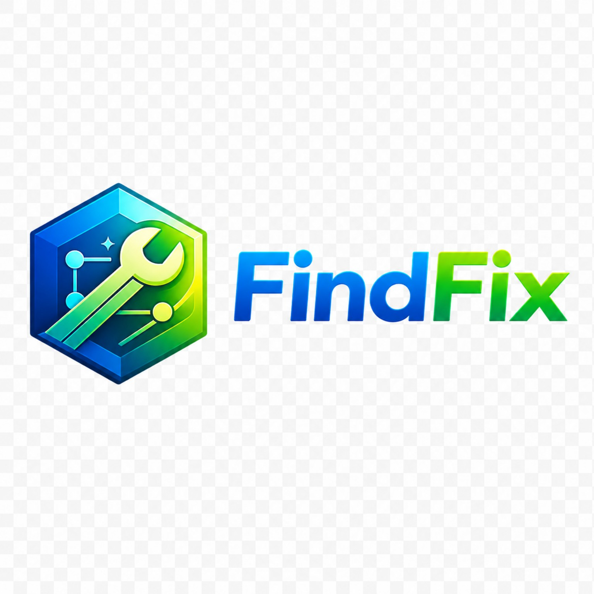

แต่ละร้านมีช่าง งาน ลูกค้า และการตั้งค่าแยกกันชัดเจน
Workspace

Service business workspace platform
โครงแอพ FindFix แบบแยกจาก CWF เดิม เพื่อให้ต่อยอดเป็นระบบจริงได้ในอนาคต ทั้งการแยกร้าน การจัดการงาน ช่าง ลูกค้า รายได้ และการตั้งค่าร้านในแพลตฟอร์มเดียว
แต่ละร้านมีช่าง งาน ลูกค้า และการตั้งค่าแยกกันชัดเจน
เป็นฐานต่อยอดไปสู่ระบบจริงแบบ SaaS หรือ White-label ได้ต่อ
เก็บข้อมูล Demo ใน localStorage และวางแยกเป็นโครงใหม่โดยเฉพาะ